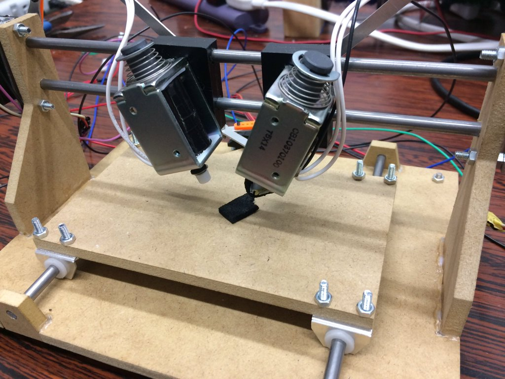

鵤
製作：2017年3月〜 
ArchLinux, Ubuntu
Emacs
非電源ゲーム
PCゲーム
電子工作
サーバー構築
スキー(国際スキー技術検定シルバー)
製作：2017年3月〜
製作：2017年4月〜 
学生証をタッチすると，その人の名前を含めたメールを送信するデバイスです．
定型文をいちいち入力するのが面倒なので，製作しました．
みんなのラズパイコンテスト2017にエントリー予定
詳しくは下の記事を見てください．
部室メーリスを学生証と連動させる(1) | hantas's blog 部室メーリスを学生証と連動させる(2) | taniho's blog
製作：2015年11月〜
マイクロマウス大会に出場するために製作したロボットです．
このロボットはハーフサイズ競技という小さなサイズのクラスに出場予定です．
今回はとても小さなサイズなので，KiCadを用いて4層基板を設計しました．
| サイズ | 37x12x47mm |
| 重量 | 18g |
| マイコン | STM32F405RG |
第37回全日本マイクロマウス大会 マイクロマウス(ハーフサイズ)競技 エキスパアートクラス 決勝17位
製作：2015年3月〜 
アイドルマスターシンデレラガールズスターライトステージ
という，スマートフォン向けのリズムゲームを自動でクリアさせようと思い立ち，自動演奏機を製作しました．
制御用のソフトウェアは概ね完成しましたが，機械周りの精度不足によりうまく演奏ができません．
そのため，RCサーボモータを自作し，アームの移動方法を変更し，確実に打鍵できるような仕組みに変更しようと考えています．
こんなことやってる場合じゃないので短期間凍結します。そのうち完成させます。 pic.twitter.com/LeUXynXp9W
— taniho/2 (@taniho_0707) 2016年4月9日
製作：2011年8月
高校の文化祭でクイズ大会を主催し，その中で使うために早押ボタンを製作しました．
このボタン単体でも使用することができますが，パソコンに接続して専用に製作したクイズソフトと連携動作させることもできます．
製作：2015年6月
私の所属するサークルでマイクロマウス交流大会を開催することになり，それに合わせて計測器を作ることにしました．
このタイマーはマイクロマウス競技，サーキット競技，ロボトレーサー競技の3競技に対応しています．
迷路の上にセンサを取り付け，その反射光の強度変化を見てスタート・ストップ検知をしています．
製作：2014年6月〜2015年9月
マイクロマウス大会に出場するために製作した，初めてのロボットです．
基板をKiCadで作成し，プリント基板は海外の製造業者に発注しました．
また，機械設計も自分で行い，CNCを使って部品を作成しました．
ソースコードは公開していませんが，プログラムもすべて自分で製作しています．
第35回全日本マイクロマウス大会 クラシックフレッシュマンクラス 第14位(決勝出場)
製作：2015年11月〜2016年2月
前述したタニタンv2.0Hへの書き込みに使用する基板です．
この基板は，書き込み機能と，ロボットに接続した電池への充電機能と，電池の残量を知らせる機能を持っています．
マイクロマウス大会で使われる迷路の写真を，テキスト形式の迷路に変換するツール群です．OpenCVの勉強がてら作成しました．
画像の四隅を選択し，迷路のマス数を入力することで，迷路写真ををテキストデータに変換することができます．
また，C言語の配列形式にも変換可能です．
製作：2014年8月16日
コミックマーケット86にて初出展したときの作品です．
吉里吉里を用いたノベルゲームです．ゲームサークル「のどかプラネタリウム」としての作品ですが，私は代表・プログラムとして参加しました．
製作：2016年3月〜開発途中
前述した，デレステ自動演奏機の付属ソフトです．
GUIベースのアプリケーションで演奏する譜面を作成できるようになっています．
演奏の補助のため，打鍵する腕も指定できるようになっています．
製作：2015年11月〜
マイクロマウスの経路導出をシミュレートするプログラムです．
残念ながらまだ製作途中ですが，クリップボードにコピーした迷路情報データから，迷路を描画する部分までは完成しています．
製作：2016年1月